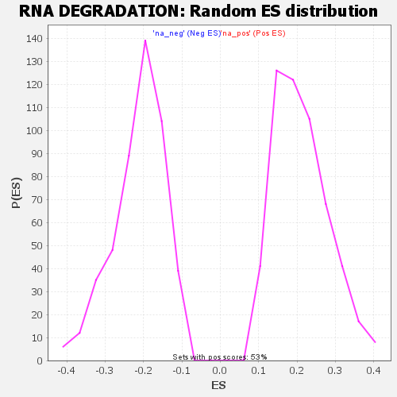

| | | Dataset | GSEA RNK clr Maaslin2 MucosalvsLuminal KO - DistalColon.rnk |
| Phenotype | NoPhenotypeAvailable |
| Upregulated in class | na_pos |
| GeneSet | RNA DEGRADATION |
| Enrichment Score (ES) | 0.49478665 |
| Normalized Enrichment Score (NES) | 2.350646 |
| Nominal p-value | 0.0 |
| FDR q-value | 0.0022423542 |
| FWER p-Value | 0.029 |
Table: GSEA Results Summary
 Fig 1: Enrichment plot: RNA DEGRADATION
Fig 1: Enrichment plot: RNA DEGRADATION
Profile of the Running ES Score & Positions of GeneSet Members on the Rank Ordered List

Fig 2: RNA DEGRADATION: Random ES distribution
Gene set null distribution of ES for RNA DEGRADATION